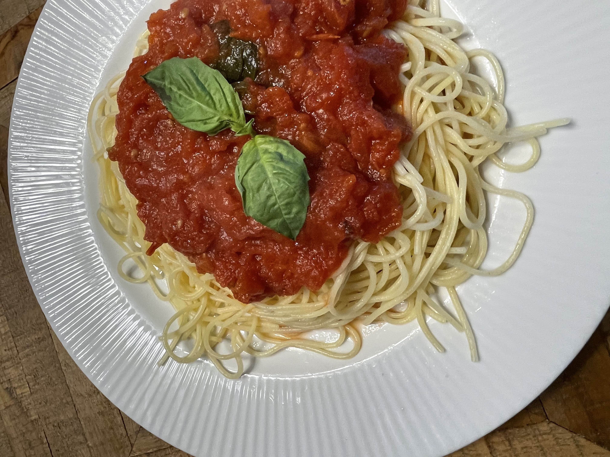

Pomodoro Sauce

Photo credit: rivco
Description
Quick and comforting pomodoro sauce with simple ingredients. This sauce has a short cooking time and a fresh taste compared to marinara sauce.
Use high quality olive oil and tomatoes for the best flavour.
Ingredients
- 1/4 cup olive oil
- 4 cloves garlic, peeled
- 1 can San Marzano tomatoes or 5 very ripe fresh tomatoes, peeled
- pinch red chili flakes, to taste
- 1 tsp - 1 T white sugar
- Parmesano Reggiano, small piece of rind
- 1 bunch fresh basil
- salt and pepper, to taste
- 1 lb pasta, spaghetti or spaghettini preferred
Steps
- Boil large pot of water with generous portion of salt. Cook pasta to al dente, reserving one cup pasta water. Strain pasta, rinse with cool water, and toss with a little olive oil to prevent sticking. Set aside.
- Heat olive oil in medium pot on low-med heat until shimmering.
- Smash garlic with side of chopping knife, add to pot. Turn intermittently until golden brown. Remove and set aside.
- Turn off heat and cool oil slightly, then add tomatoes. Return heat to medium. This step is important! Adding liquid to hot oil can hurt you or cause a fire.
- Using a potato masher, smash tomatoes to break them up a bit. They will break down slightly as they cook.
- Bring to a simmer, add sugar, chili flakes, and parmesan rind.
- Stir frequently, adding in a little pasta water at a time until desired thickness is reached.
- By this point, around 10 min of cooking time has passed. Add bunch of basil and continue to cook 10-15 min.
- Remember to taste the sauce. Add more salt, sugar, and/or chili flake to taste. The sugar is to balance the acidity, not to create a sweet sauce. Once your sauce is to your liking, remove the parmesan rind and basil stems. You may have to help the basil leaves detach from the stems.
- Serve immediately, or cool and store for later. Top with grated parmesan cheese and chili flakes.
Home